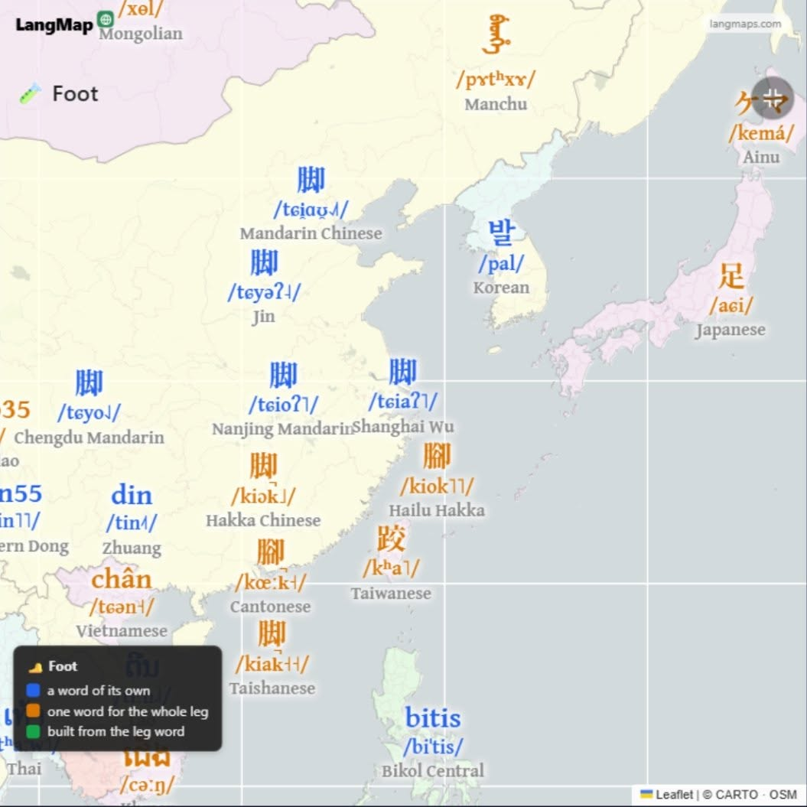

Sinosphere · · revised · Facebook post
How Far Up Does a "Foot" Go?
- Many languages use one word for both the foot and the leg; others draw a clear line between them.
- Japanese 足 ashi covers both, while Korean splits 발 bal "foot" from 다리 dari "leg".
- Chinese is divided too, and so are Europe's languages, but almost no language uses one word for hand and foot.

Contents
Where does the foot end?
Languages disagree surprisingly often about where the foot ends and the leg begins.
In some languages, the same basic word covers both FOOT and LEG. Others draw a clear lexical boundary between them.
This is a well-known typological pattern: FOOT–LEG is one of the most common body-part colexifications across languages.
On the Word Map, 650 of 1,161 languages use one word for the whole lower limb, and 476 keep foot and leg apart.
Japan and Korea: opposite sides
Japanese and Korean make a striking contrast.
Japanese: 足 (ashi) = foot, and leg
Korean: 발 (bal) = foot
Korean: 다리 (dari) = leg
Japanese 足 ashi can refer to both the foot and the leg in ordinary usage. When writing wants to be specific, the leg can be written 脚, also read ashi.
Korean draws a clear line.
The upper limb is worth a look too:
Korean: 손 (son) "hand" vs 팔 (pal) "arm"
Japanese: 手 (te) "hand" vs 腕 (ude) "arm"
Korean splits both limbs, cleanly.
Japanese does have a separate word for the arm, ude. But the map's notes point out that 手 te behaves like 足 ashi: it, too, can stretch to take in more of the limb. So in each language, the word for the hand follows the same logic as its word for the foot.
Vietnamese, by the way, sides with Japanese on the leg: chân covers the whole lower limb, and the foot alone is bàn chân.
Chinese is divided too
The Sinitic languages are internally diverse.
Mandarin: 腳 (jiǎo) "foot" vs 腿 (tuǐ) "leg"
Cantonese: 腳 (goek3) = foot, and leg
Taiwanese Hokkien: 跤 (kha) = foot, and leg
Mandarin keeps the two apart, and so do Jin and Nanjing Mandarin.
Cantonese 腳 goek3, however, runs the whole way up the limb. Taiwanese Hokkien 跤 kha likewise means both "foot" and "leg", and builds a leg-specific word on it: 跤腿. Hakka 腳 also covers the whole lower limb.
Wu is where the line actually runs. Shanghainese keeps 腳 for the foot and has separate leg words, 腿 and 腳髈 (itself built on 腳). Further south, Ningbo's 腳 is glossed as the whole leg, and Wenzhou's as "foot or leg".
So this is not simply a north–south split within Chinese. The boundary runs through the middle of the Wu-speaking area.
Europe draws the line in odd places
Europe has similar contrasts.
Romanian: picior = foot, and leg
Spanish: pie / pierna
French: pied / jambe
Italian: piede / gamba
Romanian is the Romance outlier.
Slavic is split as well. Polish distinguishes stopa "foot" from noga "leg", while Czech and Slovak noha can cover both. In everyday Russian, нога is the whole lower limb.
Some languages even build a more specific "foot" expression from a broader limb word. Chuvash, for example, has ура for the leg and foot, and ура лаппи for the foot alone, literally a "leg-palm"; compare ал лаппи, "palm of the hand".
One line no one crosses
One near-universal does survive: languages almost never use the same word for HAND and FOOT themselves.
The Chuvash "leg-palm" shows how close a language can come. The modifier is a palm or a blade, never the hand itself.
A cross-linguistic comparison of hand and foot words in 133 languages, cited in the map's notes, found no shared form at all.
Same human body, very different lexical boundaries.
Every language has a word for the foot. Not every language agrees where it stops.